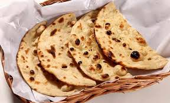

Tandoori Roti

Ingredients
- Whole wheat flour (Atta)
- Water and Salt
- Butter for glazing
Instructions
- Knead a soft dough and let it rest.
- Roll into circles and apply water on one side.
- Stick to a hot tawa and flip to cook over a direct flame.